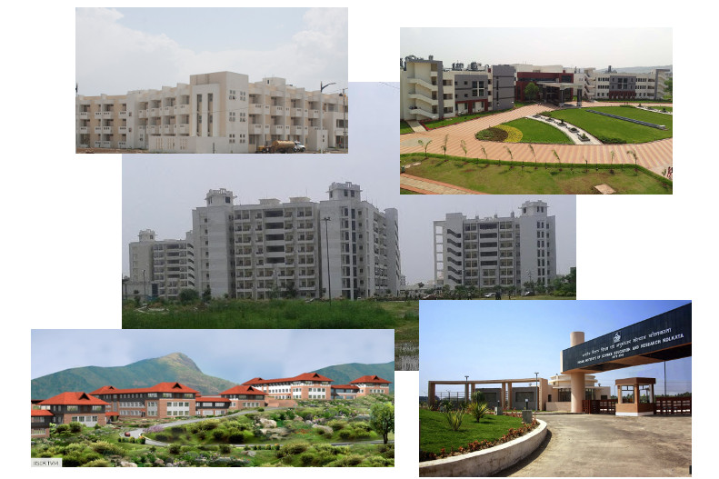

Genesis of IISERs

Indian Institutes of Science Education & Research (IISERs) were established by the Ministry of Human Resource Development (MHRD), Government of India, based on the recommendation of the Scientific Advisory Council to the Prime Minister.
Five IISERs were created initially and they are functioning at Kolkata (2006), Pune (2006), Mohali (2007), Bhopal (2008) and Thiruvananthapuram (2008). The sixth IISER was established in Tirupati (2015). The seventh member of the IISER family is IISER Berhampur.
The basic mandate of the IISERs is to carry out research in frontier areas of science and to provide quality science education at the undergraduate and the postgraduate levels. Each IISER is an autonomous institution and it awards its own degrees.